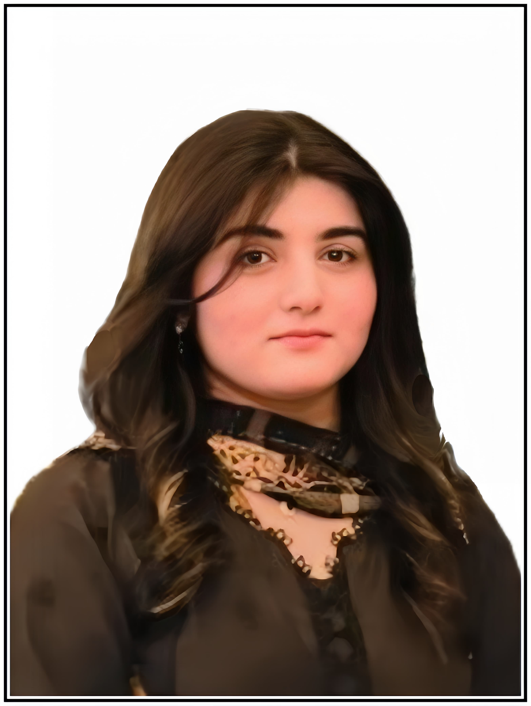

Dr. Maryam
Fazil.
A dedicated 3rd Year MBBS student at Bahria University Health Sciences Campus, Karachi, passionate about medicine, research, community health and continuous learning.
BAHRIA UNIVERSITY HEALTH SCIENCES CAMPUS · KARACHI

Serve.
Committed to knowledge, compassionate care and meaningful impact.
Driven by curiosity.
Guided by compassion.
I am Maryam Fazil, a third-year MBBS student at Bahria University Health Sciences Campus, Karachi. My medical journey is shaped by a strong interest in research, preventive healthcare, medical education and community service.
Through academic activities, research initiatives and volunteering, I aim to keep learning, collaborate with others and contribute to better health awareness and patient care.
Growing skills.
Purposeful practice.
A selection of professional and academic skills relevant to medical study, research and community engagement. The visual indicators are illustrative, not formal assessment scores.